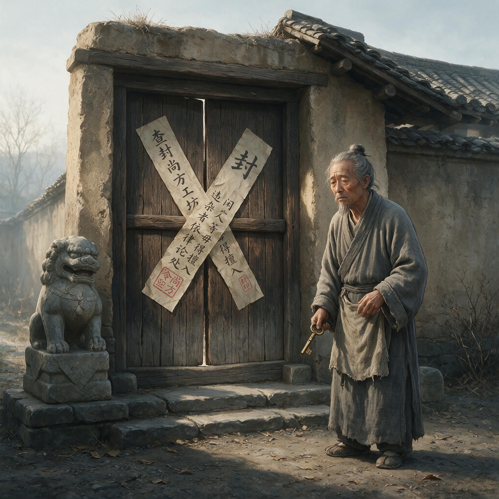

第 21 章
尚方炉火冷
尚方工坊的麻料库房是在天还没亮透的时候被贴上的封条。封条是一块新裁的桑木薄板，墨迹尚未干透，四个字顺着木纹洇开——“少府封讫”。掌麻料的匠人赵六十摸到板子的边角时，指腹沾上了湿墨。
他知道那意味着什么。麻料库的钥匙还挂在他腰间的铁环上，可锁眼里已经塞进了一小卷封泥，按着少府的印。他站在那里，天光从东墙的瓦缝里斜斜插进来，照见麻料堆上盖着的粗布边缘，有一角露在外面，是前几天刚从少府支来的一捆生麻，还没来得及劈。
赵六十没有撕封条。他知道撕封条要受什么罚。他也没有回去告诉蔡侯。蔡侯已有两日不在尚方署。
三天前，廷尉府来了两个书佐模样的吏员，把尚方令值房里的几卷造作簿册装进皂囊带走，其中一卷记着他自己的名字。赵六十认得那两人。他们从前也来，来的是少府的人，核对簿册时脸上带着不耐烦，但总会点算完留下。这一次不一样。这一次他们只带走簿册，不问炉火，不看麻料，不查工匠，走的时候甚至没有和署丞打一声招呼。
署丞是个小心的人，追到门边低声问了一句，领头那个书佐只回了四个字：“奉府君令。”然后就再没有第二句。
赵六十站在麻料库前，听见身后传来脚步声。是舂工的徒弟阿简，抱着一只空竹筐，看见封条，脚步停住了。阿简没问。阿简只是看着赵六十的手，那只手还停在封条边上，食指上沾着一点墨。
晨光再亮一些的时候，他们看见值房那头有个陌生的黄门小儿牵着一匹青骡进来，骡背两侧驮着两捆木牍，用麻绳勒得紧紧的。黄门小儿从骡背上取下一卷木牍，交给署丞。署丞接过去看，脸上的肉往下坠了一点。
“即日起，尚方诸作原料支取，改由少府直下。”署丞把木牍上的字一行一行看过去，声音不高，刚好能让围上来的几个工匠听清。“秘剑监作，停支百炼钢料。纸坊，停支麻皮、旧布、楮料。造作火耗，一律按旧额折半给炭。”
他念到这里顿了一下。炭折半。尚方的炉子不能熄。但折半的炭，只够几座小炉勉强续命。秘剑监作的三座大炉若停不下来，就必须烧更高的火，耗更多的炭。折半，就是让大炉停下来。
没有一道诏书说蔡伦不再是尚方令。没有一块符节收回他的印。印还在值房的木匣里，被那方铁镇纸压着。
但赵六十知道，印还在，印下面的通道已经断了。没有原料，尚方令的手伸下去抓不起来。没有工匠，尚方令的嘴喊出去没有人接。没有生产指令，尚方令的眼睛看过去只有空荡的院子。
从前蔡侯站在这院子里，说一句“纸坊取麻二十斤”，不到半个时辰，麻料库的门就开了，赵六十亲自过秤，二十斤，一两不少。现在蔡侯若再站进这院子，那扇门上的封条会先替他回答：不行。
第二天，少府来了三张木牍。第一张木牍开列名单，从秘剑监作调走四名掌炉匠，两名磨工，三名淬火匠，一名刻范工，调往北宫门外的武库监作。第二张木牍开列匠作定额，尚方纸坊的舂工从十二人减为六人，捞纸工从六人减为三人，晾纸帮工从五人减为二人。第三张木牍最薄，只有一行字，命令尚方造作自即日起，凡未得少府新发券书者，不得开工。
三张木牍在署丞案上一字排开。署丞没有抬头看人。他逐字念完，挥退了围观的工匠。
赵六十没有听见蔡侯回来。蔡侯没有回来。尚方署的大门开着，黄门把门的照常站着，可那两扇黑漆铜钉门像一张木然的脸。工匠们从门里进出时，脚步都压得很轻。他们不再彼此招呼，不再说今天的火色如何，不再问纸浆漂得够不够白。
他们都知道尚方的炉火还没有熄，但也不敢让它继续旺下去。炭折半，谁也不会去碰那座大炉。那座炉从前是蔡侯亲自看火的。
蔡侯懂火。蔡侯小时候在耒阳的铁官家里，看过铁炉怎么吸气，怎么吐焰，怎么把一块硬铁烧成可以捶打的软红。他后来在尚方监作里改剑坯，定淬火，调炭性，都靠那一点从铁官家里带出来的东西。工匠们背地里说，蔡侯看火，看见的不是火，是铁骨。
现在蔡侯不在，那座大炉的炉门半掩着，炉膛里的火色从亮白退到橘红，再从橘红退到一点暗红。
赵六十在第三天早上发现，原本要来收麻渣的两个少府杂役没有再出现。他们平时天一亮就推着板车从西侧小门进来，把石臼旁堆着的麻渣、破布渣、淘洗后的杂质一车一车拉出去，送到城外烧掉。那天没来。赵六十想起蔡侯曾指着一捆生麻说过，这东西，树皮、破布、麻头、鱼网，都是别人不要的废料。可到了尚方手里，就能变成纸。
赵六十等到了辰时，板车没有来。他走到西侧小门边，看见门环上拴着一根草绳，绳头上结着一个扣。他认识那个扣。那是杂役之间用的记号，意思是“上头有令，不再接了”。
他站在那里，听见院子里有人喊了一声，声音短促，像是谁在舂臼边滑了一跤。他转回去看，一个小舂工坐在地上，木杵横在脚边，石臼里的浆水翻出一片灰白色。小舂工抬头看见赵六十，嘴张了张，没说话。赵六十也什么都没说。
他们都知道，尚方纸坊的浆料已经过剩了。没有麻料，没有新浆，这些还在臼里的浆，不过是停摆之前最后一圈余波。
午后起了风。院子里那排晾纸的竹帘被吹得斜斜乱响。几张未干的纸还贴在帘上，边角被风掀起来，然后慢慢回落。那声音很轻，像许多片枯叶同时翻面。
捞纸工老葛走过去，把竹帘一张一张取下来，搁到避风处。他取到最后一张时，动作很慢。那是半帘纸，纸面中间有一条明显的厚薄分界，是前一天捞浆时手抖了一下。按照规矩，这样的纸应该揭下来打散，回臼重舂。老葛用手指试了试纸边，已经半干了。
要打散，就得趁湿。他犹豫了一下，把这张纸也收了下来，没有送回臼边，而是放进晾纸房最里面那层架子上。赵六十看见了，没有阻止。他们心里都明白，这半张纸若回臼，可能再也没有机会重新捞出来。
尚方工坊的第一批离匠名单，是在第四天清晨由署丞抄在值房外墙上的一块素板上。素板是旧物，平时用来记造作进度，用湿布可以擦掉，现在却用了墨。四个名字。第一个是秘剑监作的淬火匠陈七十。第二个是刻范工孙乙。第三个是纸坊掌浆工许五。第四个是木工助手董小。四人皆于六日内赴新差处报到，违期不往者，按“废作”论。
素板挂出来的时候，天还没有大亮。早起的工匠走过值房，都看见了。没有人念那四个名字。名字就这么挂在那里，字很工整，像一道烧在木头上的印。
陈七十走的那天，背着一个褪色的青布包袱，里面鼓鼓的，形状像两块磨刀石。他先去秘剑监作的炉房外站了一会儿。那座大炉已经完全凉了。炉膛口还支着一把长柄铁钳，钳尖上凝着一层薄薄的白灰，像落了霜。陈七十伸出一只手，摸了摸炉壁。
炉壁已经凉透了。他把手收回来，在衣摆上蹭了蹭，指节发白。然后他转身朝门外走。
赵六十站在离他十步远的地方，陈七十也没停。他们共事了十多年，说过的话不多。尚方的工匠不靠话说，靠手上。陈七十出大门时，头没有回。赵六十看见他包袱上有一根布条脱了线，在风里一抛一抛。那根线一直飘到门洞的阴影里，看不见了。
纸坊的麻料库封条在第六天多了一条新墨。有人用指尖在那块桑木板上点了一下，留下一个小小圆点。不知道是谁。但赵六十知道，那不是为了要揭封条。那是为了留下一个印。尚方的老匠人有这个习惯。他们不写字，也不会在墙上刻什么“到此一游”。他们要留，就留一个点，或者在炉门边擦一点油，或者在石臼边放一小块铁片。都是为了告诉后来的人：某日之前，这里还有人。
赵六十自己也在那个墨点下面蹭了一下拇指。没用墨。那一点几乎看不出来。
他做完这些，回到自己住的那间窄房，从床底下翻出一本旧簿。那是他当年从耒阳带来的。不是书，是一本记铁官炉次的本子，蚕头纸的皮，已经翻得稀烂。
里面没有字。赵六十不识字。他只能看。看那些纸上留下的符号：一个圈，一道划，一个半圆。他翻到最后一页，纸上还夹着一小片干了的麻皮。他拿出来，放在掌心里。麻皮已经脆了，一捏会碎。他不敢捏。
第七天，少府发来新的券书。只有一张。上面列着尚方许作的项目：铜镜一面，带钩两枚，小刀一对。券书下方有一行小字：“限用本署存料，不得另行支取。”
这是尚方数月以来接到的第一件正式造作令。不是剑，不是甲，不是天子御用器物，更不是纸。是一面铜镜，两枚带钩，一对小刀。造作等级不低，但也不是尚方该做的。尚方向来领的是秘剑监作、御用玩器、良漆铜器。现在给的是小刀和带钩。铜镜还算一件像样的活。
可这三件都有共同处：用铜。尚方库房里还有铜。铁料、麻料、炭料都受限额，铜还留着。少府知道还留着。
给一张铜范就能开工的券书，不是恩赏，是要把这座工坊最后一炉火，闷死在铜镜的背面。你接了，就等于承认尚方只能做这种活。你不接，就得停工。停了，炉火冷透，工匠解散，尚方就真成了空署。
署丞接了券书。他有他的难处。他是少府派下来的人。他不是蔡侯的人。但他也没有去向少府告过蔡侯的状。他是一条夹在中间的人。
他接了券书，搁在案上，半晌没说话。赵六十进去的时候，看见署丞额角有一层汗。天不热。风从门缝里进来，吹得那券书轻轻一动。
赵六十说：“这张券，要不要等蔡侯回来？”署丞抬起眼，看了赵六十一眼。那眼神里有一样东西，说不清，很薄，像一张旧纸。他说：“等不回来，还接不接？”赵六十没回答。他知道署丞不是在问他。是在问这屋子里的空气。
第八天，少府的吏员来了两个，带着一只旧筐，把库房里的精铁锭、百炼钢条和几块上好的剑坯料全部清点装筐，运走。他们走的时候，带走了武库的券书，也带走了尚方库房的三本支取账。赵六十站在库房门口，看见空出来的架子上只剩下几层灰。一个吏员回头看他，说：“这些料子暂存武库，不在本署烧造。”赵六十问：“暂存多久？”那吏员没答，只把一块“武库收讫”的木牌塞进他手里。木牌很新，边角还刮手。
第九天，纸坊彻底停了。不是因为没有麻料。是因为最后一批还在臼里的浆，已经放臭了。那酸臭气从石臼房的门缝里漫出来，像烂布浸过久雨。
老葛领着两个小工，把石臼里的臭浆一瓢一瓢舀出来，倒进后院挖的一个浅坑里。他们用草灰盖住。坑填平了，上面插了一根树枝。没有标记，没有文字，只有一根杨木枝，插在那里。来年或许能发芽。
赵六十在旁边看着。那气味围着他，像一团湿雾。他记得蔡侯在纸坊最忙的那些日子。臼房里没有一刻停，木杵舂下去，声如鼓，一声接一声。麻皮和旧布在水里分不出彼此，最后都成了一臼白浆。蔡侯说，这叫“纸骨”。他说纸有骨，不是软塌塌的东西。写上去的字，得有骨头撑着。赵六十那时想，纸哪来的骨头。现在他觉得，那骨头是人给的。人不在了，骨头就散了。
他想起蔡侯曾说过，元兴元年，他把改进造纸术的成果报告给皇帝，皇帝赞赏，并将技术向各地推广。那时的纸，是有骨头的。
第十天，来了一个黄门宦者，面生，乘小步辇，不入门，只停在尚方署正门外十步处。他唤署丞出去。两人在门外低声说话。赵六十和几个工匠站在门内，看见那宦者从袖中取出一片竹简。竹简上似有字。署丞看了，躬身还礼。那宦者把竹简收回袖中，转身便走。
署丞回进门来，不说。脸色比接券书那天还白。赵六十没有上前问。他不问，也知道。这些日子少府来的人，没有一个是来救蔡侯的。没有一个人来问“尚方令几时回署”。来的都是命令。
命令不用问，也不需要问答。它们一张一张堆在那里，像冬天落下来的雪。不响。但一层一层地覆着，把地气都压死了。
第十一天，淬火用的水槽被人弃在院西。那是一排旧槽，青石凿成，长六尺，宽两尺，深一尺半。尚方用它们淬剑。剑从炉里出来，红得透明，入水时一声响，水汽炸起来。现在水槽里没有水。有几只灰雀子落在槽沿上，跳两下，又飞了。赵六十走过去，看见槽底有薄薄一层浅褐色的锈水，还有几片枯叶。他用袖子把其中一只槽的边沿擦了一块。
那青石上还看得见常年浸水留下的色带，深青，像旧玉。这槽已经许久没有见火了。蔡侯还在的那个秋天，他见过蔡侯站在槽边，看匠人淬一柄环首刀。刀入水的一瞬间，蔡侯的眼睛跟着那团白汽往上抬，像在看烟里有没有魂。赵六十不懂剑。但他知道，蔡侯看这一刻，最像从前的蔡小监，人也最静。
第十二天，一个少府掾吏骑马到门，不进来，只丢下一卷木牍。木牍上列出尚方现存工匠名册的校勘命令。命令要求：三日内，尚方造作将名册、年籍、术业、授作处一一录报。
署丞把这份木牍看了很久，然后叫来赵六十。他说：“名册，要一人一人写。你帮我认人。”赵六十问：“要写去向吗？”署丞说：“只写尚方留多少人，调走多少人，故去多少人。”赵六十沉默片刻，说：“调走的人里，有陈七十、孙乙、许五、董小。故去的人里，没有。但纸坊原来的十二个舂工，现在只剩三个。捞纸工，两个。其余的不是病了，就是告假。”
署丞听了，不响。他铺开一方素木牍，提笔蘸墨。赵六十一个一个报名字。每报一个，署丞写一个。
写到后来，赵六十忽然报不出。有一个舂工的名字就在舌尖上，卡住了。他记得那人的脸，记得他舂臼时挽起的左袖总比右袖高，记得他走路左肩低一点。可名字，就是想不起来。
署丞停了笔，等他。院子里一片静。风吹过那些空了的纸帘，发出一种很细的呜咽，像什么人在远处合上了一口箱盖。
第十三天，纸坊里那口最大的石臼被人用草绳围了一匝。没有人下令围它。是老葛做的。老葛对赵六十说：“没浆了，不围，人还会往里倒水。倒水不舂，水会阴坏臼心。”赵六十点点头。
石臼空着。四周的地面已经被水泡软过太多次，踩上去微微下陷。露出地面的半截石臼，臼口边缘有几道深深的绳痕，是常年勒绳吊石留下的。赵六十摸那绳痕，觉得像人腕上的旧伤。他围着石臼走了一圈。从那石臼里舂出来的东西，曾经变成一片片纸，被装进锦绣囊袋，送上天子案头。现在石臼空着，像一只巨大的石碗，对着天，接风。
第十四天，尚方署的门内少了一个人。不是调走的，不是告假的，是董小。董小本在调走名单上，但没去新差处报到。
他那天早上背上小包袱，出了尚方大门，却往北宫门相反的方向走了。没有人追。大家都看见了，都装没看见。署丞后来知道了，也没有说什么。
他拿出名册，在“董小”那个名字旁边加了一个字：逃。不是“病”，不是“故”。是“逃”。赵六十在一旁看着那字写下去。墨浓得很，渗进木纹。
他想，逃也是好的。逃出去，至少不用眼看着炉火冷。这样的人，不该留在尚方。尚方的工匠，哪一个不是靠火活着。火没了，人就成了灰。灰不用逃。灰只会散。
第十五天，那两个中黄门又出现在尚方门口。他们不是来传旨，也不是来拿东西。他们只是站在门外的槐树下，看着门口进出的人。看了一个时辰，走了。赵六十和几个工匠在门内，谁也没有正眼看他们。但他们都知道，尚方每一扇门、每一条回廊、每一座炉房，都在那两个人眼里过了一遍。他们不是看蔡侯有没有回来。他们是在看，这座署还配不配设重卫。
赵六十后来听扫院子的老黄门说，那两个中黄门回去以后，向上边报了一句：“尚方无事。”这四个字，最冷。无事，不是平安。
无事，是无足轻重。无事，是不用再盯。无事，是尚方从一张必须看住的工坊，变成了一个可以遗忘的院落。
第十六天，下了一场小雨。雨不大，落在瓦上只有细响。麻料库门外的桑木封条湿透了，字洇得更糊。那个指印和那个墨点也浸开，像两小团青黑的霉。
赵六十蹲在门口看了一会儿。那封条已不像封条。它像一块从旧墙上剥下来的皮，贴在门板上，吸饱了水，开始发胀。他知道等天晴，这块板子会翘。等板子翘了，少府会来换一块新的。新封条上又会写“少府封讫”。他也许还会用手去碰一碰，沾回一点墨。那墨渍会留在手指上很久。洗不掉。不是墨赖着手。是手舍不得那点黑。
雨停之后，天上的云从北边压过来，灰得很厚，像一床浸透冷水的旧被。院里的炉灰被雨打湿，结成一团团黑泥。陈七十走前摸过的那座大炉，炉门还半掩着，从门缝里看进去，只有一片深不可测的凉黑。
赵六十走过去，把炉门轻轻合上。他合上时，手指碰了一下铁扣。铁扣冰凉。他想起早年听过的一个说法。
在炉房做了一辈子的老铁匠，退休时要把炉门留一条缝。留缝，是给火一条回来的路。现在他把炉门合实了。不为什么。他只是觉得，该合上了。那一条缝，留着也是给风钻，风钻进去，吹得炉膛呜呜地响，像哭。
这一夜，尚方署的灯亮得比平日还早。值房里，署丞独自坐着，面前铺开一摞木牍。那是这些日子少府发下来的所有命令、券书、名册和交接账。他一份一份看，看完一份，在左下角用刀轻轻刻一道。木牍叠在案上，高低不平。他的影子被灯投到墙上，很大，微微地动。
门外有脚步声，停了一下，又走了。他知道是谁。是赵六十。赵六十没有推门。他在门外站了一会儿，往炉房方向去了。署丞没有转头。他继续看那些木牍。
他看见一份旧簿，是蔡侯当年写造作章程时留下的手迹。字很硬，带锋。他看了很久，然后合上，归入待送少府的那一沓。
第十七天，尚方署没有一个人提蔡侯。没有人说“蔡侯今天会回来吧”。也没有人问“廷尉府那边怎么样了”。这不是害怕。这是尚方的规矩。工匠在炉前不说“冷”字。
说了，火要听，火一听见人念冷，就要怯。现在没有火。他们更不说。有些东西一出口，就会成真。
可沉默不等于不想。沉默是把东西按进骨头里，按得越深，越不敢碰。赵六十半夜起来，路过纸坊，隔着门听。他听见里面静。静得发硬。那不是没声音。那是一整个纸坊的物件都同时收了一声。石臼不响，木杵不响，竹帘不响。连风都不进去。
第十八天，铁砧被人移到了库房最里角。是少府来人搬的。铁砧不重，但四个人抬，嫌沉。铁砧是蔡侯从旧监作里调来的。不是尚方原有的。现在来人只说了一句话：“此砧归武库。”赵六十站在库房外，没有跟进去。他听见铁砧脚在青砖地面上刮出的声音，很钝，一声比一声远。那声音让他想起耒阳古驿道上的铁轮车，在泥沟里拖，走不动的样子。
铁砧移走以后，库房空了一大块。光从高窗照下来，落在地上，方方正正，白得刺眼。那一块地面，就是铁砧原来的地方。赵六十看了一会儿，转身走开。
第十九天，少府命尚方停用火禁旧规。尚方每年冬季有火禁，因为宫中防火。
但尚方是造作署，本有专门的批火牌。火禁期间，只有尚方可以起炉，须有火正看视。今年入秋，火禁未成文下到尚方，批火牌先被收回。署丞说，这是理所当然。上面要冷，哪有不收回火的牌。赵六十说，不烧火，还要火正做什么。
署丞没有接话。他知道这不是问题的关键。关键是，尚方的每一样物件，都会一个个被收回。先是火牌，再是炭券，再是铁砧，再是麻料。下一步可以是石臼，是铜范，是水槽，是工匠本身。它们先变成少府的，再变成武库的，最后变成“与尚方无关”。这宫里要清掉一个人，不用杀，不用拿，只消把他碰过的每一样东西都改个名字。
第二十天，那个从前常来收麻渣的杂役忽然回来了。他没有推板车，空着手，从西侧小门进来。他走到后院那个浅坑边，站着看。坑上已经长出一层细细的草芽。他问赵六十：“这里头埋的浆，还能要不？”赵六十看他一眼。那杂役年轻，嘴角还带着那种不懂事的笑。赵六十说：“烂了，要不得。”杂役说：“可惜。”赵六十说：“没什么可惜。天冷了，本也该停。”
杂役点点头，转身走了，走到门边又回头：“听说蔡侯回不来了？”赵六十没有回答。那杂役等了一会儿，没等到话，就出了门。门在他身后发出一声短响。
赵六十站在原地，看那扇小门。他忽然觉得很累。不是身上的累。是某种更深的东西。像一个人沿着一条路走了很远，忽然发现路边所有的树都不是他以为的那种树。可路还是路。他还得走回去。
第二十一天，少府又下了两张木牍。一张是命尚方把造作成品库里的所有已完器物，开列清单，三日内移交内府。另一张是命令尚方所剩工匠，除留值四人外，其余可“听归”。听归二字，不是遣散。是放你回去。回去听候召命。谁都知道，听候召命，就是没有召命。
赵六十被列为留值四人之一。署丞也是留值四人之一。另外两个，一个是老葛，一个是阿简。老葛看见木牍，只说了一句：“纸坊不造纸，留捞纸的做什么。”没有人回答他。
阿简呆呆地坐在石臼边上，手搭在木杵上。那根木杵已经两天没人动过。上面落了一层灰。到了夜里，赵六十一个人在院子里慢慢走。
他经过麻料库，看见封条还在，浸过雨又干了，翘起一截。他经过纸坊，门关着。他经过秘剑监作，大炉的炉门合实了。他经过值房，灯已经灭。他经过那排空水槽，灰雀不在，槽底只有几片更枯的叶。
他最后站在院子当中，天上有星星，但隔着一层薄雾，看不大清。他想起很多年前，蔡侯第一次站在这个院子里，那时候尚方还不是尚方，只是一座旧工坊，乱糟糟的。蔡侯说，这里要有规矩。后来就有了。现在规矩还在，只是人一个个走了。
赵六十不是读书人。他不写诗。但他忽然想，这院子像一页晾干的纸。四边都卷了。风大点，就飞走。风小点，就躺在这里，等着下一次湿气把它软掉。纸没有了骨，就只是一片软塌塌的东西。写上去的字，会洇，会糊，会变成一片灰黑的影子。到头来，什么也看不清。
第二十二天清晨，赵六十走出住室时，看见院子里落了一层薄霜。他踩上去，鞋底发出细碎的脆响。霜不是雪。霜下过之后，天会更晴，太阳上来，霜就没了。但这会儿，天光还早。
霜白的一层覆在石臼上，覆在空竹帘上，覆在麻料库外的封条上。那些日子以来的所有命令、券书、名册、木牌、库账，都在这层霜下面，静着。他知道太阳升起来，它们还会露出来。但此刻，天地完整，

工坊被封，匠人茫然伫立
AI 生成插图，非史实影像。
万物朴素。尚方的炉火，早已冷了。